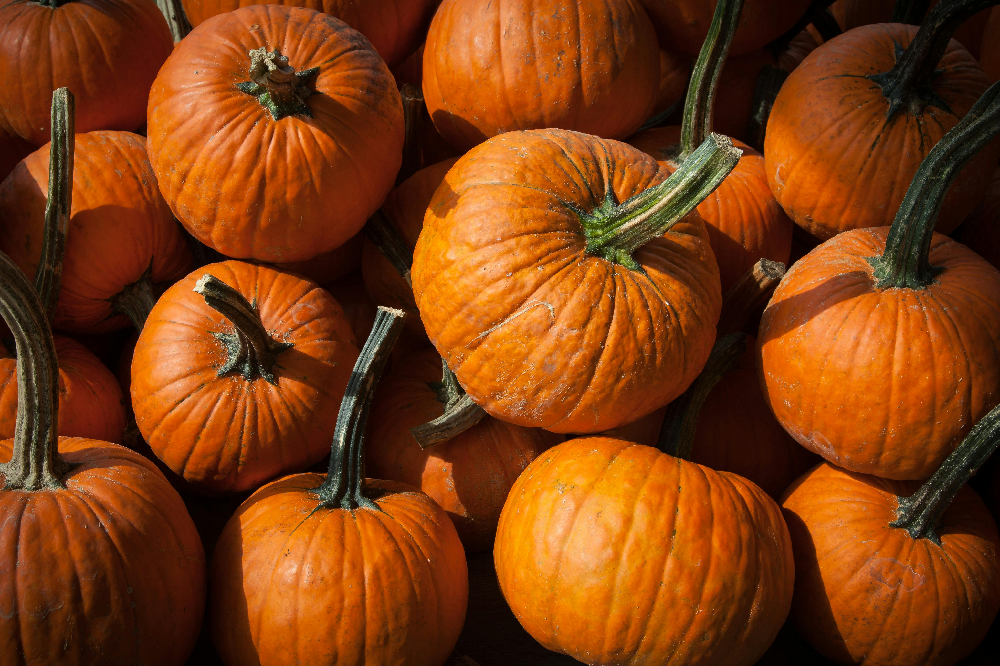

Este tema foi escolhido porque alimentação é uma necessidade basica, e quando esta em falta ou é precaria, capacidade dos individuos fica muito debilitada, com isso considero que o combate a fome é prioridade ao tentar melhorar o mundo.

Dentre as propostas que mais comuns para combate a fome e ao mesmo tempo criar uma agricultura sustentável estão, distribuição de alimentos, ensinar e equipar pessoas para o cultivo de alimentos organicos.